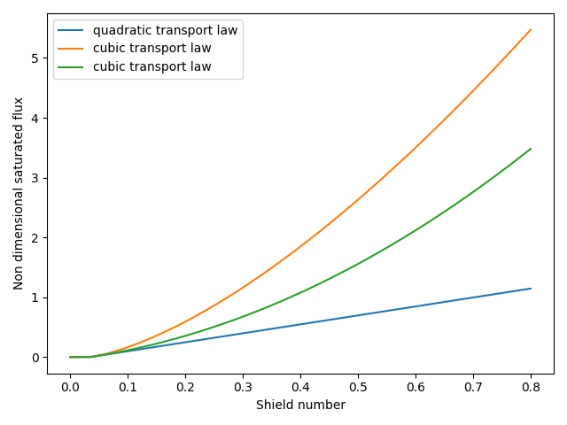

Note
Click here to download the full example code
Transport laws#
Create a plot comparing the different transport laws.
import matplotlib.pyplot as plt
import numpy as np
from PyDune.physics.sedtransport import transport_laws as TL
theta = np.linspace(0, 0.4, 1000)
theta_d = 0.035
omega = 8
plt.figure()
plt.plot(theta, TL.quadratic_transport_law(theta, theta_d, omega), label='quadratic transport law')
plt.plot(theta, TL.cubic_transport_law(theta, theta_d, omega), label='cubic transport law')
plt.plot(theta, TL.quartic_transport_law(theta, theta_d), label='quartic transport law')
plt.xlabel(r'Shield number, $\theta$')
plt.ylabel('Non dimensional saturated flux')
plt.legend()
plt.tight_layout()
plt.show()
Total running time of the script: ( 0 minutes 0.190 seconds)